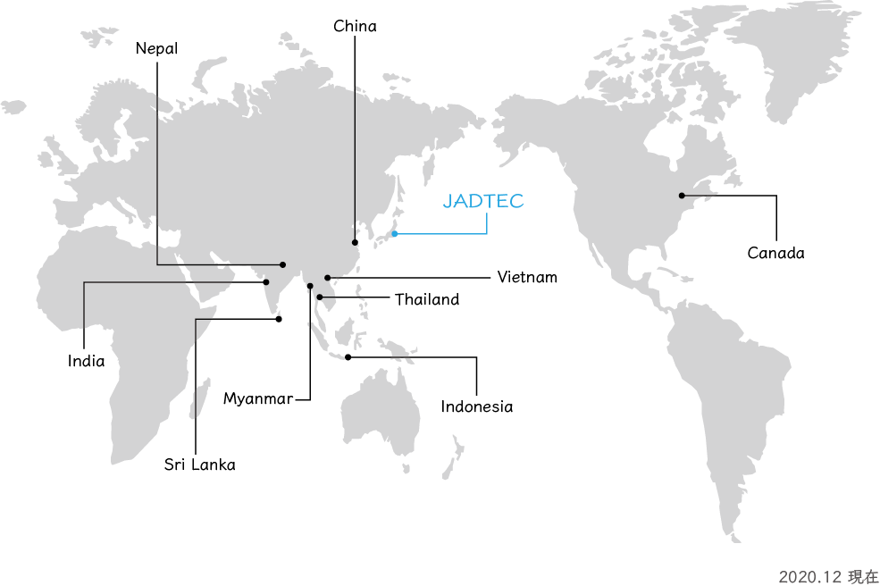

情報漏洩防止・セキュリティ対策
国内・海外を問わず、全拠点で情報漏洩防止・セキュリティ対策を講じたうえで作業を行っております。 海外拠点についても、国内拠点と同様の対策を適用しております。
建築分野に特化した専門体制、幅広い業務のワンストップ支援、国内外14拠点の
ネットワーク、セキュリティへの配慮。当社の対応体制を、根拠とあわせてご説明します。
建築の図面・書類・計算を専門に扱う会社です。汎用のアウトソーシング会社とは異なり、意匠・構造・設備・施工図それぞれの実務を理解したスタッフが担当いたします。作図基準や納品形式のご指定も、前提を一から説明していただく必要はありません。
図面作成、施工図、構造計算・省エネ計算のサポート、申請書作成、積算、BIM・3D、CADトレース、電子化、製本まで対応いたします。工程ごとに複数の外注先を使い分ける必要がなく、窓口を一本化できます。
国内に加え、アジアを中心とした海外に拠点を構えています。案件の規模や納期に応じて体制を組むことができ、継続的な大量案件にも対応いたします。海外拠点でも国内拠点と同様の情報漏洩防止・セキュリティ対策を講じております。
有資格者を含む専門家チームが、分野ごとに分かれて対応いたします。意匠、構造、設備、施工図、積算といった領域ごとに担当が分かれているため、専門性の高いご依頼にも対応できます。
「まず1枚だけ試したい」というご相談から、月単位・年単位で継続する大量案件まで承ります。スポットでのご依頼をきっかけに、段階的に委託範囲を広げていただくことも可能です。
貴社の作図基準、レイヤー規約、ファイル命名規則、納品様式にあわせて作業いたします。既存の業務フローを変えずに、そのまま外部の作業リソースとしてお使いいただけます。
図面データには、建物の構造や設備の詳細といった機微な情報が含まれます。国内・海外を問わず、全拠点で情報漏洩防止・セキュリティ対策を講じたうえで作業を行っております。機密保持契約（NDA）の締結についてもご相談ください。
構造計算・省エネ計算のサポートは、2025年4月の法改正に対応しています。対象となる計算の範囲は、ご依頼内容を確認のうえご案内いたします。
国内に加え、アジアを中心とした海外に拠点を構えています。案件の規模や納期に応じて体制を組むことができます。

海外拠点でも国内拠点と同様の情報漏洩防止・セキュリティ対策を講じております。 図面データには建物の構造や設備の詳細といった機微な情報が含まれるため、 国内・海外を問わず、同一の管理基準のもとで作業を行っております。
建築図面には、建物の構造・設備・寸法といった機微な情報が含まれます。取り扱いの方針をご説明します。
国内・海外を問わず、全拠点で情報漏洩防止・セキュリティ対策を講じたうえで作業を行っております。 海外拠点についても、国内拠点と同様の対策を適用しております。
機密保持契約の締結についてはご相談ください。 締結が必要な場合は、正式発注の前にお申し付けいただければ対応いたします。
当サイトで公開している製図サンプルは、工事名称・設計者名・日付などをマスクしたうえで掲載しております。 お客さまの図面を実績として無断で公開することはいたしません。
社内規程、認証取得状況、データ管理の具体的な運用体制など、より詳細な情報が必要な場合は、お問い合わせいただければ個別にご回答いたします。
ご依頼内容が固まっていなくても構いません。
「対応できる業務か知りたい」「概算だけ聞きたい」といったお問い合わせも歓迎いたします。